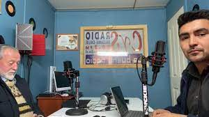

Esta radio de carácter familiar, fue fundada, en el año 2000 por Cesar Triviño con una percibió la necesidad de comunicación que tenían, entre ellos, los habitantes de la gran cantidad de islas y sectores rurales pertenecientes a la provincia de Chiloé, visualizando la solución de este problema, a través de la creación y fundación de un medio que satisfaga plenamente esa necesidad comunicacional. El objetivo se cumplió, y hoy, luego de una larga y vasta trayectoria, esta empresa se ha consolidado en el tiempo a través del paso de varias generaciones que han tenido la responsabilidad de dirigir, mantener y consolidar a estos medios, que son sin duda alguna, hoy por hoy, los más importantes dentro de la radiodifusión provincial, principalmente, por su trayectoria de 22 años de servicio ininterrumpido, en los cuales ha logrado una plena identificación con la comunidad chilota a través de la entrega de servicios, información y entretención, creando, además, espacios y canales de participación, para la difusión de las diferentes inquietudes, propuestas y necesidades comunitarias y sociales, basados en los conceptos básicos que siempre han formado parte de su línea editorial y que deben guiar los destinos de toda empresa de comunicaciones, que se precie de tal, y que además sea seria y responsable, como lo son el pluralismo, la objetividad y el compromiso con la verdad. Hoy la empresa, a ,ha sido capaz de mantenerse absolutamente vigente ante la invasión de Radioemisoras Satelitales, principalmente porque fueron, son y serán la voz que siempre estará a disposición y al servicio de la gente de Chiloé.
